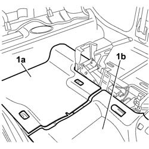
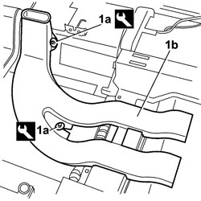
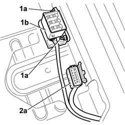
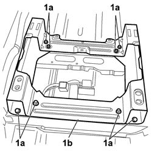

7045A23 SUPPORT/GUIDE FOR FRONT SEAT, LEFT OR RIGHT - R.R.
- Path
- Procedures > 70 FITTINGS > 7045 FRONT SEATS > 7045A FRONT SEAT ASSEMBLY > 7045A23 SUPPORT/GUIDE FOR FRONT SEAT, LEFT OR RIGHT - R.R.
- Kind
- repair procedure (removal / refitting; the operation number is the code)
- Applies to
- all engines; all production periods
- Interactive page
- https://sloeber94.github.io/elrnDB-fCrm/en/#/194001087
Applies to: all engines; all production periods
 Removing
Removing
 Refitting
Refitting- Raise the seat completely and slide it forwards into the end of travel position.
- Turn the ignition key to the OFF position.
- Disconnect the negative and positive battery terminals.
Description | Connector | |
|---|---|---|
BATTERY |
Op. 7045A10 FRONT SEAT (ONE), LEFT OR RIGHT - R.R.
Op. 7040L41 RIGHT FRONT DOOR COMPARTMENT SILL PLATE RR
Op. 7040A65 CONSOLE SIDE CLOSING (ONE) - R.R.
Op. 7040L28 TUNNEL SWITCH PANEL - R R
Op. 5010C32 AIR VENT ON TUNNEL COVER FOR REAR SEATS - R.R.
Op. 5520A10 IGNITION SWITCH ASSEMBLY - R+R
Op. 7040L20 TUNNEL COVER - R.R
1. Raise the mat on the rear side (1a) and the mat at the front (1b), releasing from the air duct outlets for the rear seats.

Applies to: all engines; all production periods
1. Us an appropriate tool to prise up both plates (1a) anchoring the air duct to the rear seats (1b), remove the air duct from the vehicle.
Tool | Description | Function | Validity |
|---|---|---|---|
1878077000 | Knife | Retainer removal |

Applies to: all engines; all production periods
1. Undo nuts (1a) securing the electrical connector (1b) and disconnect the connector.
2. Prise up and disconnect connector (2a).
Description | Connector | |
|---|---|---|
1b | DRIVER'S SEAT COUPLING |
Description | Connector | |
|---|---|---|
2a | PASSENGER SEAT COUPLING |

Applies to: all engines; all production periods
1. Undo the eight bolts (1a) fixing the seat mount/guide (1b) to the floorpan and remove the mount from the vehicle.

Applies to: all engines; all production periods
Refitting
Removing- Check that the seat mount/guide is not damaged.
- Place the seat mount/guide in position in the vehicle.
- Tighten the eight bolts anchoring the seat mount/guide to the floorpan and tighten to the specified torque.
Component | Fastening | dia | Value (daNm) | Validity |
|---|---|---|---|---|
FRONT SEATS TO FRAME | Bolt | M10 | 3,6 ÷ 4,4 |
Component | Fastening | dia | Value (daNm) | Validity |
|---|---|---|---|---|
FRONT SEATS TO FRAME | Bolt | M10 | 3,6 ÷ 4,4 |
- Fit and attach the seat junction electrical connector the sea mount/guide.
- Attach the electrical connector to the seat mount/guide and tighten the nuts.
Description | Connector | |
|---|---|---|
DRIVER'S SEAT COUPLING |
Description | Connector | |
|---|---|---|
PASSENGER SEAT COUPLING |
- Position the air duct for the rear seats on the vehicle and tighten both anchorage plates.
- Lower the mat at the front, inserting both air duct outlets for the rear seats in the slots.
- Lower the mat at the rear of the floor pan.
Op. 7040L20 TUNNEL COVER - R.R
Op. 5520A10 IGNITION SWITCH ASSEMBLY - R+R
Op. 5010C32 AIR VENT ON TUNNEL COVER FOR REAR SEATS - R.R.
Op. 7040L28 TUNNEL SWITCH PANEL - R R
Op. 7040A65 CONSOLE SIDE CLOSING (ONE) - R.R.
Op. 7040L41 RIGHT FRONT DOOR COMPARTMENT SILL PLATE RR
Op. 7045A10 FRONT SEAT (ONE), LEFT OR RIGHT - R.R.
- Reconnect the negative and positive battery terminals.
Description | Connector | |
|---|---|---|
BATTERY |
- Reposition the seat.
Topics linked from this page (11)
- 5010B58 <x>DUCT BETWEEN CLIMATE CONTROL UNIT HOUSING AND AIR DUCT TO REAR SEATS (ONE), LH OR RH - R&R</x>
- 5010C32 AIR VENT ON TUNNEL COVER FOR REAR SEATS - R.R.
- 5520A10 IGNITION SWITCH ASSEMBLY - R+R
- 7040A65 CONSOLE SIDE CLOSING (ONE) - R.R.
- 7040L20 TUNNEL COVER - R.R
- 7040L28 TUNNEL SWITCH PANEL - R R
- 7040L41 RIGHT FRONT DOOR COMPARTMENT SILL PLATE RR
- 7045A10 FRONT SEAT (ONE), LEFT OR RIGHT - R.R.
- A001 BATTERY
- D070 DRIVER'S SEAT COUPLING
- D071 PASSENGER SEAT COUPLING